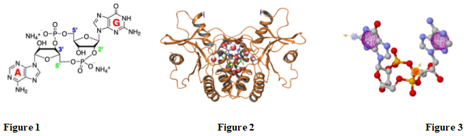
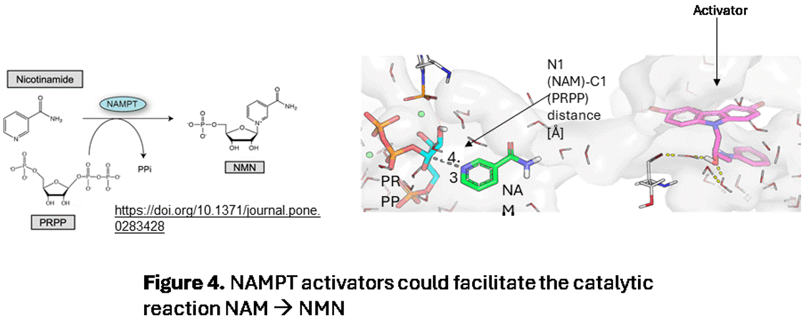
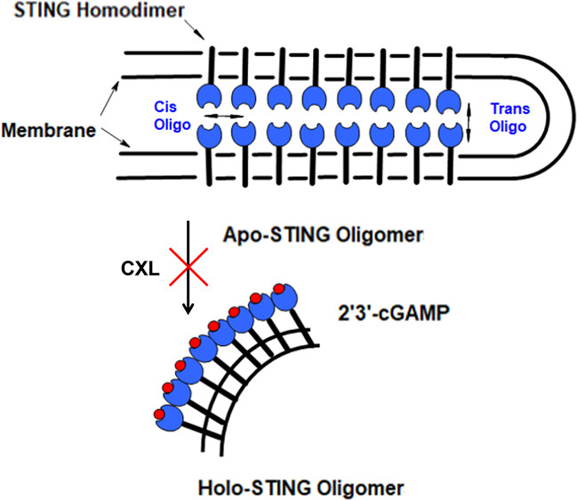
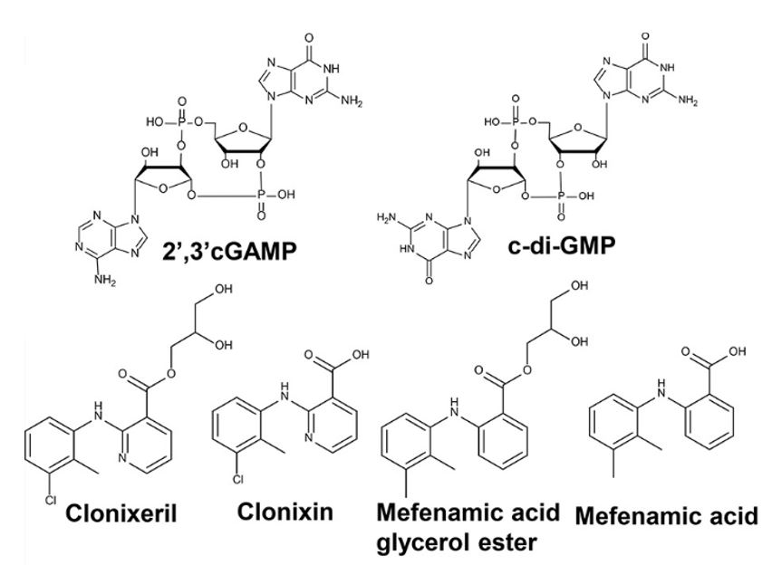
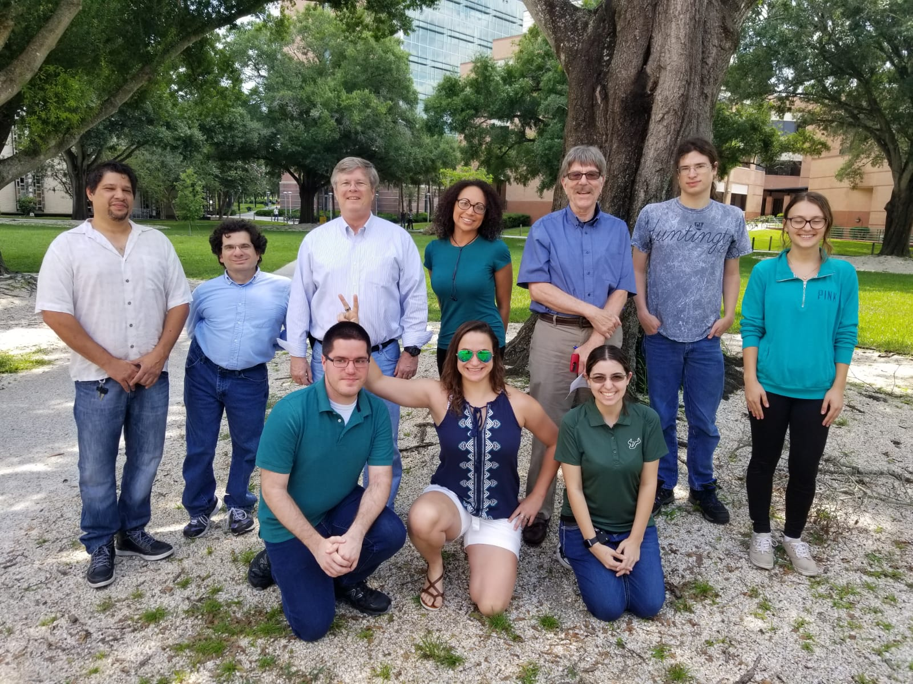
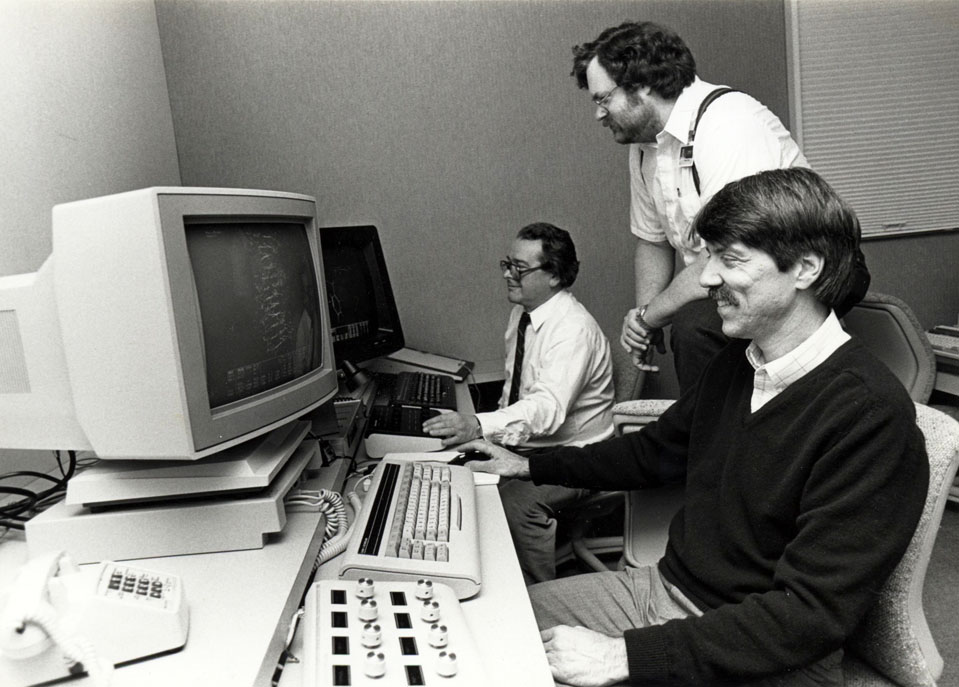

Welcome
In our lab, we are primarily interested in discovering molecules that can be used as drugs to treat autoimmune diseases, cancer, and cardiovascular disease. We have a long-standing interest in inhibitors of enzymes in signal transduction pathways and in the biosynthetic pathways of polyamines but one of our most research project involves the discovery of compounds that can modulate a protein called STING (STimulator of INterferon Genes). STING is a protein involved in the innate immune system and STING-mediated production of Interferon- (IFB-) within a tumor’s environment can result in activation of tumor antigen-specific (CD8+) T-cell immunity that can lead to tumor regression. Prior studies have demonstrated that STING activation should result in T-cell mediated anti-tumor activity, which has significant potential as a therapeutic strategy for the treatment of patients with advanced solid tumors because this involves activation of the patient’s own immune system to fight cancer. On the other hand, inhibition of STING (by STING inhibitors) would lead to a decreased production of IFN- which could have implications in the treatment of autoimmune disease such as lupus. There are known STING activators which are cyclic-dinucleotides (Fig. 1). We are using our computational modeling tools (Figs. 2 & 3) that rely on the X-ray structure of the nucleotide binding region of human STING, along with biochemical and cellular assays we have developed in our lab, to discover non-nucleotide low molecular weight compounds that can either activate or inhibit STING activity, thereby providing physicians with orally administered drugs to combat cancer or autoimmune disease.
One of our most recent projects in the cardiovascular area involves NAMPT (nicotinamide phosphoribosyl transferase). This enzyme catalyzes the reaction of nicotinamide (NAM) with phosphoribosyl-pyrophosphate (PRPP) Figure 4. This biochemical reaction produces NMN (nicotinamide mononucleotide). Combination of NMN with AMP results in the production of NAD+. When the heart is deprived of oxygen, during heart failure for example, it is beneficial to increase the levels of NAD+ and activators of NAMPT do just that. Thus we are developing drugs that activate NAMPT.
Research
STING Pathway Modulation
Our STING research focuses on developing novel small-molecule modulators to fine-tune STING activity, offering potential therapeutic avenues for these conditions.
In our laboratory, we are at the forefront of investigating the stimulator of interferon genes (STING) pathway, a critical component of innate immunity that responds to cytosolic DNA threats, such as those from viral infections or cellular damage. Dysregulation of STING can lead to excessive inflammation, contributing to autoimmune diseases, cytokine storms (e.g., in COVID-19), and other inflammatory disorders.A landmark achievement is the discovery of clonixeril (CXL), a non-nucleotide compound identified as the most potent human STING (hSTING) modulator to date. Published in ACS Central Science (2025), our work reveals CXL's dual-mode interaction: it acts as a weak agonist at concentrations above 1 nM but exhibits unprecedented antagonistic effects at sub-femtomolar levels (down to 100 attomolar, or 10⁻¹⁸ M). This inverse dose-response behavior, where lower doses yield stronger inhibition, challenges conventional pharmacology and highlights CXL's unique mechanism.
We employed advanced computational approaches, including molecular dynamics (MD) simulations of equilibrated hSTING models (agonist and antagonist conformations), to screen compound libraries like the NCI Diversity Set. Virtual docking and pharmacophore-based screening pinpointed CXL, which we validated through a multi-tiered experimental pipeline:
Cellular Assays: In THP-1 monocytic cells using an IRF3 luciferase reporter, CXL potently inhibited STING-mediated interferon production when competing with agonists like 2',3'-cGAMP or diABZI3. In HEK293 cells, it suppressed 2',3'-cGAMP-induced STING phosphorylation (at Ser366) and IFN-β expression, reducing levels by over 50% even at 1 femtomolar.
Biophysical Characterization: Techniques such as surface plasmon resonance (SPR), microscale thermophoresis (MST), dynamic light scattering (DLS), isothermal titration calorimetry (ITC), and fluorescence microscopy confirmed CXL's binding and its disruption of STING oligomerization. MST revealed an EC₅₀ below 1 femtomolar in competition assays, while DLS showed CXL alters oligomer formation in the presence of 2',3'-cGAMP.
Structure-activity relationship (SAR) studies on CXL analogs, including clonixin (its carboxylic acid precursor) and mefenamic acid derivatives, underscored the specificity of CXL's ester moiety for ultra-potent activity. Unlike known antagonists, CXL's attomolar potency suggests it may stabilize inhibitory conformations or interfere with higher-order STING assemblies. This breakthrough not only expands our understanding of STING regulation but also paves the way for ultra-low-dose therapeutics to mitigate hyperactive immune responses. Ongoing efforts in our lab include optimizing CXL derivatives for clinical translation and exploring their efficacy in disease models. For more details, see our publication: Sparks et al., ACS Cent. Sci. 2025, 11, 994–1008.
NAMPT Activation
By targeting NAMPT, we aim to restore metabolic balance and enhance protective signaling for therapeutic benefits in diabetic hearts.
Our laboratory is committed to advancing research on nicotinamide phosphoribosyltransferase (NAMPT), a key enzyme in the NAD+ salvage pathway that is often dysregulated in metabolic disorders like diabetes. This dysregulation contributes to elevated NADH/NAD+ ratios, promoting cardiac arrhythmias, ischemia-reperfusion (I/R) injury, and overall cardiovascular dysfunction in diabetic conditions.
 A key accomplishment is our demonstration of P7C3 (1-(3,6-Dibromo-carbazol-9-yl)-3-phenylamino-propan-2-ol) as a potent NAMPT activator with cardioprotective effects in diabetic models. Published in The Journal of Pharmacology and Experimental Therapeutics (2022, Volume 382, Issue 2, Pages 233–245), our study utilized male leptin receptor-deficient (db/db) mice treated daily with P7C3 (10 mg/kg i.p.) for four weeks, revealing its ability to rescue metabolic imbalances and mitigate cardiac injury.
Computational docking confirmed P7C3's enhancement of NAMPT dimerization, validated through in vitro and in vivo assays. Key findings include:
A key accomplishment is our demonstration of P7C3 (1-(3,6-Dibromo-carbazol-9-yl)-3-phenylamino-propan-2-ol) as a potent NAMPT activator with cardioprotective effects in diabetic models. Published in The Journal of Pharmacology and Experimental Therapeutics (2022, Volume 382, Issue 2, Pages 233–245), our study utilized male leptin receptor-deficient (db/db) mice treated daily with P7C3 (10 mg/kg i.p.) for four weeks, revealing its ability to rescue metabolic imbalances and mitigate cardiac injury.
Computational docking confirmed P7C3's enhancement of NAMPT dimerization, validated through in vitro and in vivo assays. Key findings include:
Enhanced Cardiac Function: P7C3 improved ECG parameters (e.g., reduced QTc and JT intervals, decreased ST elevation) and echocardiography metrics (increased ejection fraction and fractional shortening), demonstrating anti-arrhythmic properties.
Metabolic Rescue: Treatment normalized elevated NADH/NAD+ ratios in diabetic hearts, measured via enzymatic assays, while significantly boosting NAMPT and SIRT1 activities (assessed colorimetrically and fluorometrically).
Glycemic Control: Four-week P7C3 administration lowered fasting blood glucose and improved glucose tolerance (via intraperitoneal GTT), reducing hyperglycemia in db/db mice.
Reduced Infarct Size in I/R Injury: In ex vivo Langendorff-perfused hearts and in vivo myocardial infarction models, P7C3 decreased infarct size (TTC staining), troponin I, and LDH release. These effects were PI3K-dependent, as co-treatment with LY294002 abolished benefits.
Protective Signaling: Upregulation of p-AKT, p-eNOS, and Beclin-1 expression (via Western blot) linked NAMPT activation to downstream cardioprotective pathways.
Credit: Katarzyna Mizgalska
This research highlights P7C3's specificity and efficacy, positioning it as a promising agent for diabetic cardiomyopathy with anti-ischemic and metabolic benefits. Current efforts focus on optimizing P7C3 derivatives and evaluating their translational potential in broader disease models. For more details, see: Tur et al., JPET 2022, DOI: 10.1124/jpet.122.001122.
Lab Alumni

The Guida Lab 2022. From Left: Dr. Kenyon Daniel, Dr. Will Lawless (Back), Dr. Christine Gambino (Front), Dr. Wayne Guida, Dr. Guy Dahoff, Dr. Anna Kharitonova, Dr. Wesley Brooks.
Dr. Grace Binder (center) and Alan Carregal (right).
The Guida Lab. From Left: Allan Carregal, Dr. Kenyon Daniel, Dr. Wesley Brooks, Brandi Cook, Dr. Wayne Guida, Dr. Rainer Metcalf (Back), Dr. Grace Binder, Dr. Christine Gambino (Front).
Dr. Wayne Guida (front) working on computational chemistry with Dr. Jeff Watthey, the inventor of the marketed drug, benazepril (Lotensin). At the time of this photo, Jeff reported to Wayne at Ciba Pharmaceuticals in Summit, NJ where they both worked.